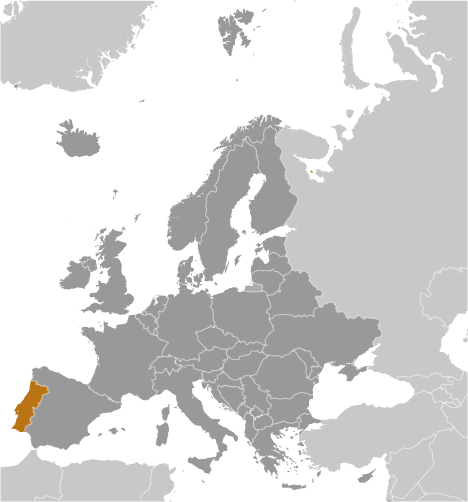
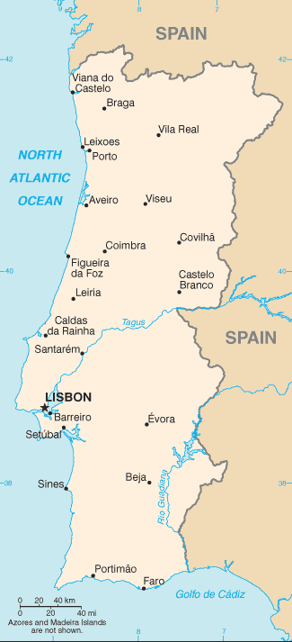
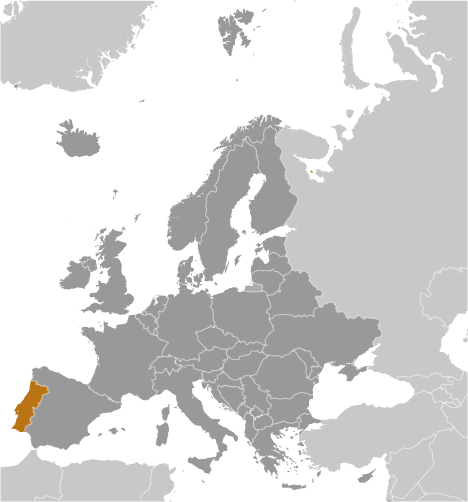
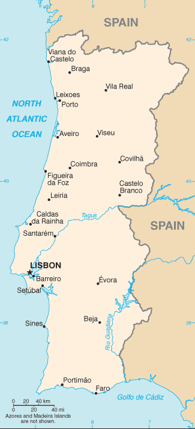

Europe :: PORTUGAL
Introduction :: PORTUGAL
-
Following its heyday as a global maritime power during the 15th and 16th centuries, Portugal lost much of its wealth and status with the destruction of Lisbon in a 1755 earthquake, occupation during the Napoleonic Wars, and the independence of Brazil, its wealthiest colony, in 1822. A 1910 revolution deposed the monarchy; for most of the next six decades, repressive governments ran the country. In 1974, a left-wing military coup installed broad democratic reforms. The following year, Portugal granted independence to all of its African colonies. Portugal is a founding member of NATO and entered the EC (now the EU) in 1986.
Geography :: PORTUGAL
-
Southwestern Europe, bordering the North Atlantic Ocean, west of Spain39 30 N, 8 00 WEuropetotal: 92,090 sq kmland: 91,470 sq kmwater: 620 sq kmnote: includes Azores and Madeira Islandscountry comparison to the world: 112slightly smaller than Virginiatotal: 1,224 kmborder countries (1): Spain 1,224 km1,793 kmterritorial sea: 12 nmcontiguous zone: 24 nmexclusive economic zone: 200 nmcontinental shelf: 200-m depth or to the depth of exploitationmaritime temperate; cool and rainy in north, warmer and drier in souththe west-flowing Tagus River divides the country: the north is mountainous toward the interior, while the south is characterized by rolling plainsmean elevation: 372 melevation extremes: lowest point: Atlantic Ocean 0 mhighest point: Ponta do Pico (Pico or Pico Alto) on Ilha do Pico in the Azores 2,351 mfish, forests (cork), iron ore, copper, zinc, tin, tungsten, silver, gold, uranium, marble, clay, gypsum, salt, arable land, hydropoweragricultural land: 39.7%arable land 11.9%; permanent crops 7.8%; permanent pasture 20%forest: 37.8%other: 22.5% (2011 est.)5,400 sq km (2012)concentrations are primarily along or near the Atlantic coast; both Lisbon and the second largest city, Porto, are coastal citiesAzores subject to severe earthquakesvolcanism: limited volcanic activity in the Azores Islands; Fayal or Faial (1,043 m) last erupted in 1958; most volcanoes have not erupted in centuries; historically active volcanoes include Agua de Pau, Furnas, Pico, Picos Volcanic System, San Jorge, Sete Cidades, and Terceirasoil erosion; air pollution caused by industrial and vehicle emissions; water pollution, especially in coastal areasparty to: Air Pollution, Biodiversity, Climate Change, Climate Change-Kyoto Protocol, Desertification, Endangered Species, Hazardous Wastes, Law of the Sea, Marine Dumping, Marine Life Conservation, Ozone Layer Protection, Ship Pollution, Tropical Timber 83, Tropical Timber 94, Wetlands, Whalingsigned, but not ratified: Air Pollution-Persistent Organic Pollutants, Air Pollution-Volatile Organic Compounds, Environmental ModificationAzores and Madeira Islands occupy strategic locations along western sea approaches to Strait of Gibraltar
People and Society :: PORTUGAL
-
10,839,514 (July 2017 est.)country comparison to the world: 84noun: Portuguese (singular and plural)adjective: Portuguesehomogeneous Mediterranean stock; citizens of black African descent who immigrated to mainland during decolonization number less than 100,000; since 1990 East Europeans have entered PortugalPortuguese (official), Mirandese (official, but locally used)Roman Catholic 81%, other Christian 3.3%, other (includes Jewish, Muslim, other) 0.6%, none 6.8%, unspecified 8.3%note: represents population 15 years of age and older (2011 est.)0-14 years: 15.34% (male 866,004/female 797,004)15-24 years: 11.36% (male 653,672/female 577,800)25-54 years: 41.72% (male 2,298,920/female 2,223,184)55-64 years: 12.18% (male 617,036/female 702,992)65 years and over: 19.4% (male 861,270/female 1,241,632) (2017 est.)total dependency ratio: 53.4youth dependency ratio: 21.6elderly dependency ratio: 31.8potential support ratio: 3.1 (2015 est.)total: 42.2 yearsmale: 40.2 yearsfemale: 44.4 years (2017 est.)country comparison to the world: 320.04% (2017 est.)country comparison to the world: 1969 births/1,000 population (2017 est.)country comparison to the world: 20711.1 deaths/1,000 population (2017 est.)country comparison to the world: 292.5 migrant(s)/1,000 population (2017 est.)country comparison to the world: 38concentrations are primarily along or near the Atlantic coast; both Lisbon and the second largest city, Porto, are coastal citiesurban population: 64.6% of total population (2017)rate of urbanization: 0.76% annual rate of change (2015-20 est.)LISBON (capital) 2.884 million; Porto 1.299 million (2015)at birth: 1.07 male(s)/female0-14 years: 1.09 male(s)/female15-24 years: 1.13 male(s)/female25-54 years: 1.03 male(s)/female55-64 years: 0.88 male(s)/female65 years and over: 0.69 male(s)/femaletotal population: 0.96 male(s)/female (2016 est.)30.2 years (2015 est.)10 deaths/100,000 live births (2015 est.)country comparison to the world: 149total: 4.3 deaths/1,000 live birthsmale: 4.8 deaths/1,000 live birthsfemale: 3.9 deaths/1,000 live births (2017 est.)country comparison to the world: 189total population: 79.4 yearsmale: 76.2 yearsfemale: 82.9 years (2017 est.)country comparison to the world: 481.53 children born/woman (2017 est.)country comparison to the world: 19273.9% (2014)9.5% of GDP (2014)country comparison to the world: 314.43 physicians/1,000 population (2014)3.4 beds/1,000 population (2011)improved:urban: 100% of populationrural: 100% of populationtotal: 100% of populationunimproved:urban: 0% of populationrural: 0% of populationtotal: 0% of population (2015 est.)improved:urban: 99.6% of populationrural: 99.8% of populationtotal: 99.7% of populationunimproved:urban: 0.4% of populationrural: 0.2% of populationtotal: 0.3% of population (2015 est.)NANANA20.8% (2016)country comparison to the world: 955.3% of GDP (2013)country comparison to the world: 55definition: age 15 and over can read and writetotal population: 95.7%male: 97.1%female: 94.4% (2015 est.)total: 17 yearsmale: 17 yearsfemale: 17 years (2014)total: 28%male: 27.2%female: 28.8% (2016 est.)country comparison to the world: 16
Government :: PORTUGAL
-
conventional long form: Portuguese Republicconventional short form: Portugallocal long form: Republica Portuguesalocal short form: Portugaletymology: name derives from the Roman designation "Portus Cale" meaning "Port of Cale"; Cale was an ancient Celtic town and port in present-day northern Portugalsemi-presidential republicname: Lisbongeographic coordinates: 38 43 N, 9 08 Wtime difference: UTC 0 (5 hours ahead of Washington, DC, during Standard Time)daylight saving time: +1hr, begins last Sunday in March; ends last Sunday in October18 districts (distritos, singular - distrito) and 2 autonomous regions* (regioes autonomas, singular - regiao autonoma); Aveiro, Acores (Azores)*, Beja, Braga, Braganca, Castelo Branco, Coimbra, Evora, Faro, Guarda, Leiria, Lisboa (Lisbon), Madeira*, Portalegre, Porto, Santarem, Setubal, Viana do Castelo, Vila Real, Viseu1143 (Kingdom of Portugal recognized); 5 October 1910 (republic proclaimed)Portugal Day (Dia de Portugal), 10 June (1580); note - also called Camoes Day, the day that revered national poet Luis de Camoes (1524-80) diedhistory: several previous; latest adopted 2 April 1976, effective 25 April 1976amendments: proposed by the Assembly of the Republic; adoption requires two-thirds majority vote of Assembly members; amended several times, last in 2005 (2016)civil law system; Constitutional Court review of legislative actsaccepts compulsory ICJ jurisdiction with reservations; accepts ICCt jurisdictioncitizenship by birth: nocitizenship by descent only: at least one parent must be a citizen of Portugaldual citizenship recognized: yesresidency requirement for naturalization: 10 years; 6 years if from a Portuguese-speaking country18 years of age; universalchief of state: President Marcelo REBELO DE SOUSA (since 9 March 2016)head of government: Prime Minister Antonio Luis Santos da COSTA (since 24 November 2015)cabinet: Council of Ministers appointed by the president on the recommendation of the prime ministerelections/appointments: president directly elected by absolute majority popular vote in 2 rounds if needed for a 5-year term (eligible for a second term); election last held on 24 January 2016 (next to be held in January 2021); following legislative elections last held in October 2015, the leader of the majority party or majority coalition was appointed prime minister by the presidentelection results: Marcelo REBELO DE SOUSA elected president; percent of vote - Marcelo REBELO DE SOUSA (PSD) 52%, Antonio Sampaio da NOVA (independent) 22.9%, Marisa MATISA (BE) 10.1%, Maria de BELEM (independent) 4.2%, other 10.8%note: there is also a Council of State that acts as a consultative body to the presidentdescription: unicameral Assembly of the Republic or Assembleia da Republica (230 seats; 226 members directly elected in multi-seat constituencies by proportional representation vote and 4 members - 2 each in 2 constituencies representing Portuguese living abroad - directly elected by proportional representation vote; members serve 4-year terms)elections: last held on 4 October 2015 (next to be held by October 2019)election results: percent of vote by party - PaF 36.9%, PS 32.3%, B.E. 10.2%, CDU 8.3%, PPD/PSD (Azores and Madeira) 1.5%, PAN 1.4%, other 9.4%; seats by party - PaF 102, PS 86, B.E. 19, CDU 17, PPD/PSD (Azores and Madeira) 5, PAN 1highest court(s): Supreme Court or Supremo Tribunal de Justica (consists of 12 justices); Constitutional Court or Tribunal Constitucional (consists of 13 judges)judge selection and term of office: Supreme Court justices nominated by the president and appointed by the Assembly of the Republic; judges appointed for life; Constitutional Court judges - 10 elected by the Assembly and 3 elected by the other Constitutional Court judges; judges elected for 6-year non-renewable termssubordinate courts: Supreme Administrative Court (Supremo Tribunal Administrativo); Audit Court (Tribunal de Contas); appellate, district, and municipal courtsDemocratic and Social Center/Popular Party or CDS-PP [Assuncao CRISTAS]Ecologist Party "The Greens" or PEV [Heloisa APOLONiA]People_Animals_Nature Party or PAN [Andre SILVA]Portuguese Communist Party or PCP [Jeronimo DE SOUSA]Social Democratic Party or PPD/PSD [Pedro Passos COELHO]Socialist Party or PS [Antonio COSTA]The Left Bloc or BE or o Bloco [Catarina MARTINS]Unitary Democratic Coalition or CDU [Jeronimo DE SOUSA] (includes PCP and PEV)Armed Forces Officers' Association or AOFA [Lt. Col. Antonio Costa MOTA]General Workers Union or UGT [Carlos SILVA]General Confederation of Portuguesse Workers or CGTP-IN [Armenio CARLOS]TugaLeaks (a website that has become a mouthpiece for publicizing diverse protest action)other: media; labor unionsADB (nonregional member), AfDB (nonregional member), Australia Group, BIS, CD, CE, CERN, CPLP, EAPC, EBRD, ECB, EIB, EMU, ESA, EU, FAO, FATF, IADB, IAEA, IBRD, ICAO, ICC (national committees), ICCt, ICRM, IDA, IEA, IFAD, IFC, IFRCS, IHO, ILO, IMF, IMO, IMSO, Interpol, IOC, IOM, IPU, ISO, ITSO, ITU, ITUC (NGOs), LAIA (observer), MIGA, MINUSMA, NATO, NEA, NSG, OAS (observer), OECD, OPCW, OSCE, Pacific Alliance (observer), Paris Club (associate), PCA, Schengen Convention, SELEC (observer), UN, UNCTAD, UNESCO, UNHCR, UNIDO, Union Latina, UNWTO, UPU, WCO, WFTU (NGOs), WHO, WIPO, WMO, WTO, ZCchief of mission: Ambassador Domingos T?eixeira de Abreu Fezas VITAL (since 28 January 2016)chancery: 2012 Massachusetts Avenue NW, Washington, DC 20036telephone: [1] (202) 328-8610FAX: [1] (202) 462-3726consulate(s) general: Boston, New York, San Franciscoconsulate(s): New Bedford (MA), Newark (NJ), Providence (RI)chief of mission: Ambassador George E. GLASS (since 25 August 2017)embassy: Avenida das Forcas Armadas, 1600-081 Lisbonmailing address: Apartado 43033, 1601-301 Lisboa; PSC 83, APO AE 09726telephone: [351] (21) 727-3300FAX: [351] (21) 726-9109consulate(s): Ponta Delgada (Azores)two vertical bands of green (hoist side, two-fifths) and red (three-fifths) with the national coat of arms (armillary sphere and Portuguese shield) centered on the dividing line; explanations for the color meanings are ambiguous, but a popular interpretation has green symbolizing hope and red the blood of those defending the nationarmillary sphere (a spherical astrolabe modeling objects in the sky and representing the Republic); national colors: red, greenname: "A Portugesa" (The Song of the Portuguese)lyrics/music: Henrique LOPES DE MENDOCA/Alfredo KEILnote: adopted 1910; "A Portuguesa" was originally written to protest the Portuguese monarchy's acquiescence to the 1890 British ultimatum forcing Portugal to give up areas of Africa; the lyrics refer to the "insult" that resulted from the event
Economy :: PORTUGAL
-
Portugal has become a diversified and increasingly service-based economy since joining the European Community - the EU's predecessor - in 1986. Over the following two decades, successive governments privatized many state-controlled firms and liberalized key areas of the economy, including the financial and telecommunications sectors. The country joined the Economic and Monetary Union in 1999 and began circulating the euro on 1 January 2002 along with 11 other EU members.The economy grew by more than the EU average for much of the 1990s, but the rate of growth slowed in 2001-08. The economy contracted in 2009, and fell again from 2011 to 2013, as the government implemented spending cuts and tax increases to comply with conditions of an EU-IMF financial rescue package, signed in May 2011. Portugal successfully exited its EU-IMF program in May 2014. A modest recovery gathered steam in 2015 due to strong export performance and a rebound in private consumption. Growth slowed slightly in the first half of 2016, but rebounded in the last two quarters of the year to register at 1.4 percent for the year. Unemployment remains high, at 10.2%, at the end of 2016, but has improved steadily since peaking at 18% in 2013.The center-left minority Socialist government has unwound some unpopular austerity measures while managing to remain within most EU fiscal targets. The budget deficit fell from 11.2% of GDP in 2010 to 2.0% in 2016, the country’s lowest since democracy was restored in 1974, and surpassing the EU and IMF projections of 3%. Portugal is expected to exit the EU’s excessive deficit procedure by mid-2017.$298.6 billion (2016 est.)$290.7 billion (2015 est.)$283.1 billion (2014 est.)note: data are in 2016 dollarscountry comparison to the world: 57$204.6 billion (2016 est.)1.4% (2016 est.)1.6% (2015 est.)0.9% (2014 est.)country comparison to the world: 159$28,900 (2016 est.)$28,400 (2015 est.)$27,900 (2014 est.)note: data are in 2016 dollarscountry comparison to the world: 6615.8% of GDP (2016 est.)15.5% of GDP (2015 est.)15.4% of GDP (2014 est.)country comparison to the world: 123household consumption: 65.8%government consumption: 18%investment in fixed capital: 14.9%investment in inventories: 0%exports of goods and services: 40.3%imports of goods and services: -39.1% (2016 est.)agriculture: 2.3%industry: 22.4%services: 75.4% (2016 est.)grain, potatoes, tomatoes, olives, grapes; sheep, cattle, goats, pigs, poultry, dairy products; fishtextiles, clothing, footwear, wood and cork, paper and pulp, chemicals, fuels and lubricants, automobiles and auto parts, base metals, minerals, porcelain and ceramics, glassware, technology, telecommunications; dairy products, wine, other foodstuffs; ship construction and refurbishment; tourism, plastics, financial services, optics0.7% (2016 est.)country comparison to the world: 1475.178 million (2016 est.)country comparison to the world: 80agriculture: 8.6%industry: 23.9%services: 67.5% (2014 est.)11.1% (2016 est.)12.4% (2015 est.)country comparison to the world: 14019% (2015 est.)lowest 10%: 2.6%highest 10%: 25.9% (2015 est.)33.9 (2015 est.)34 (2014 est.)country comparison to the world: 102revenues: $88.1 billionexpenditures: $92.22 billion (2016 est.)43% of GDP (2016 est.)country comparison to the world: 31-2% of GDP (2016 est.)country comparison to the world: 91130.4% of GDP (2016 est.)129% of GDP (2015 est.)note: data cover general government debt, and includes debt instruments issued (or owned) by government entities other than the treasury; the data include treasury debt held by foreign entities; the data include debt issued by subnational entities, as well as intra-governmental debt; intra-governmental debt consists of treasury borrowings from surpluses in the social funds, such as for retirement, medical care, and unemployment; debt instruments for the social funds are not sold at public auctionscountry comparison to the world: 5calendar year0.6% (2016 est.)0.5% (2015 est.)country comparison to the world: 700% (2016)0.05% (2015)note: this is the European Central Bank's rate on the marginal lending facility, which offers overnight credit to banks in the euro areacountry comparison to the world: 1573.77% (31 December 2016 est.)4.49% (31 December 2015 est.)country comparison to the world: 160$81.15 billion (31 December 2016 est.)$72.29 billion (31 December 2015 est.)note: see entry for the European Union for money supply for the entire euro area; the European Central Bank (ECB) controls monetary policy for the 18 members of the Economic and Monetary Union (EMU); individual members of the EMU do not control the quantity of money circulating within their own borderscountry comparison to the world: 42$173.9 billion (31 December 2016 est.)$163.8 billion (31 December 2015 est.)country comparison to the world: 41$311.5 billion (31 December 2016 est.)$326.2 billion (31 December 2015 est.)country comparison to the world: 36$59.84 billion (31 December 2015 est.)$57.77 billion (31 December 2014 est.)$79.18 billion (31 December 2013 est.)country comparison to the world: 46$1.462 billion (2016 est.)$138 million (2015 est.)country comparison to the world: 36$54.76 billion (2016 est.)$54.47 billion (2015 est.)country comparison to the world: 48agricultural products, foodstuffs, wine, oil products, chemical products, plastics and rubber, hides, leather, wood and cork, wood pulp and paper, textile materials, clothing, footwear, machinery and tools, base metalsSpain 26.2%, France 12.6%, Germany 11.7%, UK 7%, US 4.9% (2016)$64.79 billion (2016 est.)$64.74 billion (2015 est.)country comparison to the world: 42agricultural products, chemical products, vehicles and other transport material, optical and precision instruments, computer accessories and parts, semiconductors and related devices, oil products, base metals, food products, textile materialsSpain 32.8%, Germany 13.5%, France 7.8%, Italy 5.5%, Netherlands 5.1% (2016)$25.13 billion (31 December 2016 est.)$19.4 billion (31 December 2015 est.)country comparison to the world: 55$449 billion (31 March 2016 est.)$447 billion (31 March 2015 est.)country comparison to the world: 28$147.1 billion (31 December 2016 est.)$143.5 billion (31 December 2015 est.)country comparison to the world: 35$84.73 billion (31 December 2016 est.)$83.3 billion (31 December 2015 est.)country comparison to the world: 37euros (EUR) per US dollar -0.9214 (2016 est.)0.885 (2015 est.)0.7525 (2014 est.)0.7634 (2013 est.)0.7752 (2012 est.)
Energy :: PORTUGAL
-
electrification - total population: 100% (2016)49.66 billion kWh (2015 est.)country comparison to the world: 5347.03 billion kWh (2015 est.)country comparison to the world: 539.701 billion kWh (2016 est.)country comparison to the world: 244.616 billion kWh (2016 est.)country comparison to the world: 4219.63 million kW (2015 est.)country comparison to the world: 4437.9% of total installed capacity (2015 est.)country comparison to the world: 1700% of total installed capacity (2015 est.)country comparison to the world: 16622.3% of total installed capacity (2015 est.)country comparison to the world: 8432.5% of total installed capacity (2015 est.)country comparison to the world: 100 bbl/day (2016 est.)country comparison to the world: 1830 bbl/day (2016 est.)country comparison to the world: 177270,600 bbl/day (2016 est.)country comparison to the world: 270 bbl (1 January 2017 es)country comparison to the world: 181308,700 bbl/day (2016 est.)country comparison to the world: 40234,700 bbl/day (2016 est.)country comparison to the world: 52128,800 bbl/day (2016 est.)country comparison to the world: 4071,920 bbl/day (2016 est.)country comparison to the world: 690 cu m (2014 est.)country comparison to the world: 1858.371 billion cu m (2015 est.)country comparison to the world: 580 cu m (2014 est.)country comparison to the world: 1684.713 billion cu m (2015 est.)country comparison to the world: 330 cu m (1 January 2014 es)country comparison to the world: 18643.98 million Mt (2014 est.)country comparison to the world: 65
Communications :: PORTUGAL
-
total subscriptions: 4,787,677subscriptions per 100 inhabitants: 44 (July 2016 est.)country comparison to the world: 34total: 11,572,085subscriptions per 100 inhabitants: 107 (July 2016 est.)country comparison to the world: 76general assessment: Portugal's telephone system has a state-of-the-art network with broadband, high-speed capabilitiesdomestic: integrated network of coaxial cables, open-wire, microwave radio relay, and domestic satellite earth stationsinternational: country code - 351; a combination of submarine cables provide connectivity to Europe, North and East Africa, South Africa, the Middle East, Asia, and the US; satellite earth stations - 3 Intelsat (2 Atlantic Ocean and 1 Indian Ocean), NA Eutelsat; tropospheric scatter to Azores (2015)Radio e Televisao de Portugal (RTP), the publicly owned TV broadcaster, operates 4 domestic channels and external service channels to Africa; overall, roughly 40 domestic TV stations; viewers have widespread access to international broadcasters with more than half of all households connected to multi-channel cable or satellite TV systems; publicly owned radio operates 3 national networks and provides regional and external services; several privately owned national radio stations and some 300 regional and local commercial radio stations (2014).pttotal: 7,629,560percent of population: 70.4% (July 2016 est.)country comparison to the world: 52
Transportation :: PORTUGAL
-
number of registered air carriers: 12inventory of registered aircraft operated by air carriers: 122annual passenger traffic on registered air carriers: 12,635,233annual freight traffic on registered air carriers: 343,971,094 mt-km (2015)CR, CS (2016)64 (2013)country comparison to the world: 77total: 43over 3,047 m: 52,438 to 3,047 m: 71,524 to 2,437 m: 8914 to 1,523 m: 15under 914 m: 8 (2017)total: 21914 to 1,523 m: 1under 914 m: 20 (2013)gas 1,344 km; oil 11 km; refined products 188 km (2013)total: 3,075.1 kmbroad gauge: 2,439 km 1.668-m gauge (1,633.4 km electrified)narrow gauge: 108.1 km 1.000-m gaugeother: 528 km (gauge unspecified) (2014)country comparison to the world: 58total: 82,900 kmpaved: 71,294 km (includes 2,613 km of expressways)unpaved: 11,606 km (2008)country comparison to the world: 59210 km (on Douro River from Porto) (2011)country comparison to the world: 95total: 109by type: bulk carrier 8, cargo 35, carrier 1, chemical tanker 21, container 7, liquefied gas 6, passenger 13, passenger/cargo 5, petroleum tanker 3, roll on/roll off 1, vehicle carrier 9foreign-owned: 81 (Belgium 8, Colombia 1, Denmark 4, Germany 14, Greece 2, Italy 12, Japan 9, Mexico 1, Norway 2, Spain 18, Sweden 3, Switzerland 3, US 4)registered in other countries: 15 (Cyprus 2, Malta 3, Panama 10) (2010)country comparison to the world: 48major seaport(s): Leixoes, Lisbon, Setubal, SinesLNG terminal(s) (import): Sines
Military and Security :: PORTUGAL
-
1.84% of GDP (2016)1.79% of GDP (2015)1.79% of GDP (2014)2.09% of GDP (2013)1.91% of GDP (2012)country comparison to the world: 77Portuguese Army (Exercito Portuguesa), Portuguese Navy (Marinha Portuguesa; includes Marine Corps), Portuguese Air Force (Forca Aerea Portuguesa, FAP) (2013)18-30 years of age for voluntary military service; no compulsory military service, but conscription possible if insufficient volunteers available; women serve in the armed forces, on naval ships since 1993, but are prohibited from serving in some combatant specialties; reserve obligation to age 35 (2012)
Transnational Issues :: PORTUGAL
-
Portugal does not recognize Spanish sovereignty over the territory of Olivenza based on a difference of interpretation of the 1815 Congress of Vienna and the 1801 Treaty of Badajozstateless persons: 14 (2016)seizing record amounts of Latin American cocaine destined for Europe; a European gateway for Southwest Asian heroin; transshipment point for hashish from North Africa to Europe; consumer of Southwest Asian heroin